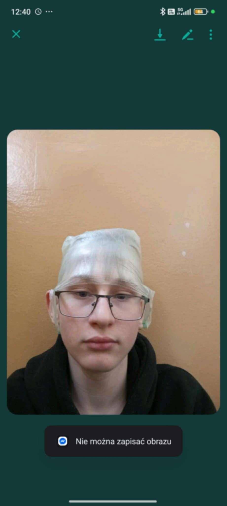

Strona o Hubercie
Witam każdego fana Haziego
W tym dokumencie dowiecie sie duzo o swoim idolu
To jest Hubert ksywka Hazi
Hazi uwielbia zakładac worek sniadaniowy na glowe
Raz nawet na lekcji fizyki zalozyl i pokazal pani jak ładnie wyglada


Hubert ma piekna twarz i nie boi sie pozowc do zdjec


Tutaj hubert pokazuje, ze bardzo lubi pic easy boosty
Troszeczke sie wkurzyl na kamerzyste ale to norma


Hubercika nawet mozna porownc do malpy
Sa podobni nie tylko w wygladzie

Hazi to ogromny fan ferrari i nie lubi red bulla

Hubert nigdy nie byl najlepszy z plastyki
Czasami na lekcjach az krzyczal na pania ze to jest do dupy

Na koniec zdjecie jego ekipy faceitowej na choince